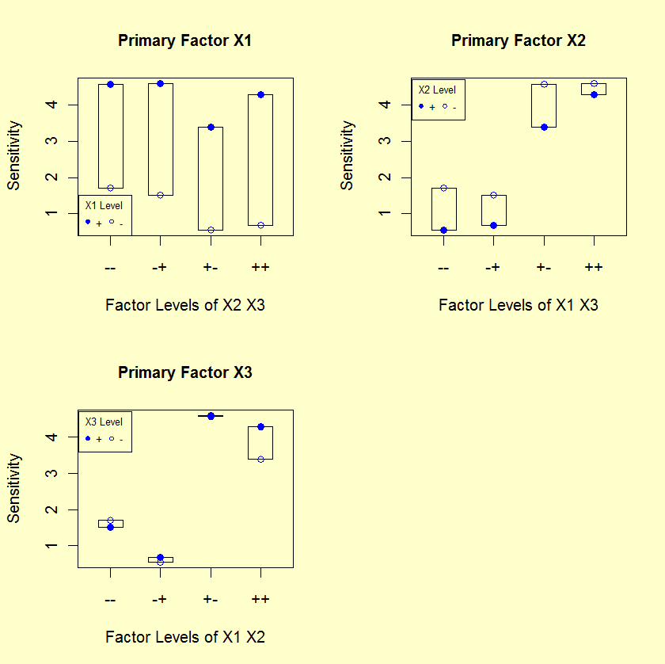

|
Block Plots
|
Block plots are a
useful adjunct to the DOE mean plot and the DOE interaction effects
plot to confirm the importance of factors, to establish the
robustness of main effect conclusions, and to determine the
existence of interactions. Specifically,
- The first plot below answers the question: Is X1
important? If X1 is important, is this importance
robust over all four settings of X2 and X3?
- The second plot below answers the question: Is X2
important? If X2 is important, is this importance
robust over all four settings of X1 and X3?
- The third plot below answers the question: Is X3
important? If X3 is important, is this importance
robust over all four settings of X1 and X2?
For block plots, it is the height of the bars that is important,
not the relative positioning of each bar. Hence we focus on the
size and internals of the blocks, not "where" the blocks are one
relative to another.

|
|
Conclusions from the Block Plots
|
Recall that the block plot will access factor importance
by the degree of consistency (robustness) of the factor effect over a
variety of conditions. In this light, we can make the following
conclusions from the block plots.
- Relative Importance of Factors: All of the bar heights in plot 1
(turns) are greater than the bar heights in plots 2 and 3.
Hence, X1 is more important than X2 and X3.
- Statistical Significance: In plot 1, looking at the levels
within each bar, we note that the response for level 2 is
higher than level 1 in each of the four bars. By chance,
this happens with probability 1/(24) = 1/16 = 6.25 %.
Hence, X1 is near-statistically significant at the 5 % level.
Similarly, for plot 2, level 1 is greater than level 2 for
all four bars. Hence, X2 is near-statistically significant.
For X3, there is no consistent ordering within all
four bars, and hence X3 is not statistically significant.
Rigorously speaking then, X1 and X2 are not statistically
significant (since 6.25 % is not < 5 %); on the other hand such
near-significance is suggestive to the analyst that such factors
may in fact be important, and hence warrant further attention.
Note that the usual method for determining statistical
significance is to perform an analysis of variance (ANOVA).
ANOVA is based on normality assumptions. If these normality
assumptions are valid, then ANOVA methods are the most
powerful method for determining statistical signficance. The
advantage of the block-plot method is that it is based on less
rigorous assumptions than ANOVA. At an exploratory stage, it
is useful to know that our conclusions regarding important
factors are valid under a wide range of assumptions.
- Interactions: For X1, the four bars do not change height in
any systematic way and hence there is no evidence of X1
interacting with either X2 or X3. Similarly,
there is no evidence of interactions for X2.
|


{kind=link}